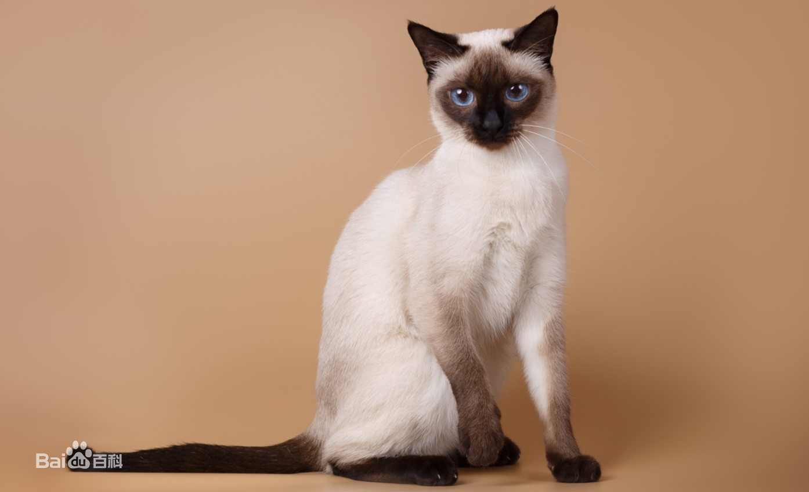

| 暹罗猫 |
暹（xiān）罗猫源于泰国，它们毛短体长身瘦，有着深蓝色美丽的眼睛和较深色的面部；暹罗猫据信是世界上最古老的猫种，它们非常喜欢人的陪伴，喜欢和人接触，躺在你的床上、椅子上，你的腿上，身上；它们非常聪明和富有感情，对小孩子很宽容，也可以给老人做伴，它们通常喜欢呆在家里，不喜欢到外面疯跑，是很理想的宠物伴侣。暹罗猫叫声很大，喜欢不停地讲话。【外貌特征】头细长呈楔形。头盖平坦，从侧面看，头顶部至鼻尖成直线。脸形尖而呈V字形，口吻尖突呈锐角，从吻端至耳尖形成V字形。鼻梁高而直，从鼻端到耳尖恰为等边三角形。两颊瘦削，齿为剪式咬合。耳朵大，基部宽，耳端尖、直立。眼睛大小适中，杏仁形，深蓝色。从内眼角至眼梢的延长线，与耳尖构成V字形。眼微凸。长度与后肢相等。柔韧性好，肌肉发达，身材苗条，长得棱角分明，腿细而长。掌小，呈椭圆形。尾巴长而美丽，尾端尖，略卷曲。【体型】体型中等偏小，修长苗条。骨骼纤细，肌肉结实。颈长，体长，尾细长。从肩至臀部呈圆筒状。腹部紧凑但不上收。臀部肌肉结实，与肩同宽。四肢细长，协调。前肢比后胶稍短。【毛色】体毛为均匀的单色，但允许海豹色斑点。蓝色斑点上有少量渐变色。体毛色应与斑点色对比明显。所有特征部位（鼻端、四肢、耳朵、尾巴）斑点均为同一色，斑点中应无混杂白色。重点色部位的颜色应为下述四种：海豹重点色色：身体为米色。脸部、耳朵、腿下半段、脚、尾均为海豹色。蓝重点色：身体为米色。脸、耳、脚、尾为蓝灰色。巧克力重点色：身体为象牙色，脸、耳、腿、脚、尾为巧克力色。紫丁香重点色（淡紫重点色）：身体为白色或木兰色。脸、耳、腿、尾为淡紫褐色。【生活习性】暹罗猫性格刚烈好动，机智灵活，好奇心特强，善解人意。暹罗猫喜欢与人为伴，可用皮带拴着走，它需要主人的不断爱抚和关心，对主人忠心耿耿，与主人感情深厚。如果强制与主人分开，则可能会抑郁而死。暹罗猫十分聪明，能很快学会翻筋斗，叼回抛物等技巧。暹罗猫的叫声独特，像小孩的啼哭声，似乎在与人们不停地说话，而且声音很大。由于以上的特性，人们给暹罗猫冠以“像狗一样的猫”的美称。【历史】暹罗猫原产于泰国（旧名暹罗），在200多年前，这种珍贵的猫仅在泰国的土宫和大寺院中饲养，是足不出户的贵族。1884年英国驻泰国的曼谷领事离任时，将泰王国的礼物之一——海豹重点色的暹罗猫带回英国，立即受到英国许多爱猫者的重视，翌年该猫就在伦敦郊外的水晶宫猫展会上，引起震动。1920年引入美国，而后传布世界各地。据有关资料记载，泰王宫内饲养暹罗猫的历史可以追溯到拉玛国王五世时期，从那时起，暹罗猫就在宫廷内安居下来，宫廷里的人像对待王子和公主一样精心饲养它们。它们被打扮得珠光宝气，连喝水吃饭用的碗都是非金即银。它们住在配备有冷气的豪华房间里，一天三顿饭由一专门的厨娘料理，即使是泰国遭遇金融危机、经济严重下滑之际，宫廷里的暹罗猫依旧过着无忧无虑的快乐日子。【电影拍摄】电影《加菲猫》中有一只暹罗猫饰演毛毛。 |
 |